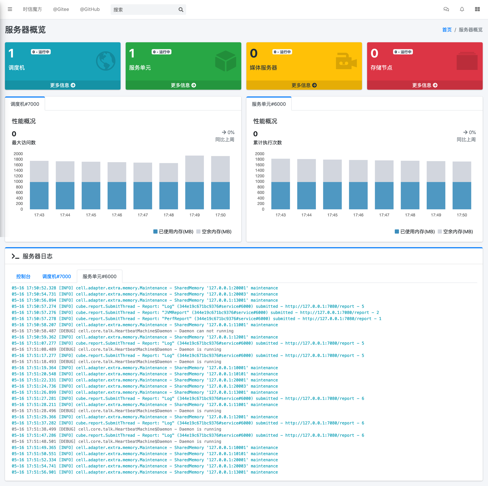

服务器安装指南¶
时信魔方团队仅提供支持 64-bit x86 架构的 时信魔方服务器 程序版本，如果您需要其他架构的服务器版本，需要您从源代码编译并构建。
时信魔方的服务器主要由以下几个服务器类型构成：
魔方引擎调度服务器 - 所有魔方终端都与其建立连接，该服务器主要功能是管理各个接入的终端连接。
魔方引擎服务单元服务器 - 与调度服务器直接相连的服务器，是魔方业务功能的处理服务器。
魔方媒体单元服务器 - 进行与音视频等媒体数据流相关的操作的服务器。
魔方控制台服务器 - 便于对魔方各个服务器节点进行管理和配置的辅助程序，可选择性进行安装。
魔方应用服务器 - 魔方提供的基础应用程序的服务器，魔方为开发者预先开发了即时通信应用程序，该服务器就是与各个应用程序配套的服务器程序，可选择性安装。
从构建版本安装¶
一般的，我们建议使用构建版本进行安装和配置，推荐使用 Ubuntu 或 CentOS 进行安装。
获取构建版本。
下载预构建版本：
curl -o cube-server-3.0.tar.gz \ https://static.shixincube.com/cube/prebuild/cube-server-3.0.tar.gz解压安装包：
tar -xzf cube-server-3.0.tar.gz
安装辅助工具 （可选步骤） ：
安装 ImageMagick 软件。
sudo apt-get install imagemagick
安装媒体服务器 （可选步骤） ：
sudo apt-get update && sudo apt-get install --no-install-recommends --yes \ gnupg # Add Kurento repository to Apt sudo apt-key adv --keyserver keyserver.ubuntu.com --recv-keys 5AFA7A83 source /etc/upstream-release/lsb-release 2>/dev/null || source /etc/lsb-release sudo tee "/etc/apt/sources.list.d/kurento.list" >/dev/null <<EOF # Kurento Media Server - Release packages deb [arch=amd64] http://ubuntu.openvidu.io/6.16.0 $DISTRIB_CODENAME kms6 EOF # Install KMS sudo apt-get update && sudo apt-get install --no-install-recommends --yes \ kurento-media-server
媒体服务器的配置说明请查阅 服务器配置指南 文档。
配置服务器。
服务器详细的配置说明参看 服务器配置指南 文档。
配置服务器管理控制台 （可选步骤） 。
时信魔方控制台默认使用 MySQL 数据库，编辑
cube-server-3.0/console/console.properties配置文件：# console.properties # DB db=mysql # MySQL config # 数据库服务器地址 mysql.host=127.0.0.1 # 数据库服务器端口 mysql.port=3306 # 数据库 Schema mysql.schema=cube_3_console # 访问用户名 mysql.user=cube # 访问密码 mysql.password=shixin_cube_2021
在配置文件里填写您的 MySQL 配置信息。
配置应用服务器 （可选步骤） 。
时信魔方应用服务器默认使用 MySQL 数据库，编辑
cube-server-3.0/server-app/server.properties# server.properties # DB db=mysql # MySQL config # 数据库服务器地址 mysql.host=192.168.10.121 # 数据库服务器端口 mysql.port=3306 # 数据库 Schema mysql.schema=cube_3_app # 访问用户名 mysql.user=cube # 访问密码 mysql.password=shixincube # 跨域源 http.allowOrigin=http://127.0.0.1:8080 https.allowOrigin=https://127.0.0.1:8080 # 魔方客户端的配置信息 cube.address=127.0.0.1 cube.domain=shixincube.com cube.appKey=shixin-cubeteam-opensource-appkey
跨域源请根据您实际部署 Web 应用程序访问时地址和端口进行配置。
魔方客户端的配置信息是应用程序用于设置魔方引擎时的配置信息，请参考 客户端应用程序 章节了解相关配置信息。
启动服务器管理控制台 （可选步骤） 。
按照以下步骤启动控制器台程序。
cd cube-server-3.0/console chmod +x ./start.sh ./start.sh当您看到终端打印以下内容时，说明控制台已经启动：
Enter "http://Your-Server-IP:7080" in your browser to login Cube Console. 在浏览器中输入 "http://您的服务器IP:7080" 登录 Cube Console 。
启动媒体单元服务器 （可选步骤） 。
如果您在 Ubuntu 系统里安装好了 KMS 服务器并且配置好了相关参数，可以执行以下命令启动服务器：
sudo service kurento-media-server start
需要关闭服务器时，执行以下命令：
sudo service kurento-media-server stop
启动应用服务器 （可选步骤） 。
如果您需要运行时信魔方的应用程序，并配置好的应用服务器，可以执行以下命令启动服务器：
cd cube-server-3/server-app chmod +x ./start.sh ./start.sh需要关闭服务器时，执行以下命令：
cd cube-server-3/server-app chmod +x ./stop.sh ./stop.sh登录控制台，在控制台里启动并配置服务器 （可选步骤） 。
在浏览器里输入：
http://127.0.0.1:7080登录控制台。默认用户名：
cube默认密码：
shixincube
时信魔方控制台首页截图¶
您可以查看 时信魔方控制台使用文档 了解如何使用控制台来管理各个服务器节点。
使用脚本命令运行服务器。
您也可以使用脚本命令启动和停止服务器，这样不需要运行控制台。如果您是在 cube-server 工程目录里进入
deploy目录；如果使用预构建安装包进入server目录：cd deploy或
cd server执行各服务器启动/停止脚本：
启动服务单元服务器：
./start-service.sh
停止服务单元服务器：
./stop-service.sh
启动调度服务器：
./start-dispatcher.sh
停止调度服务器：
./stop-dispatcher.sh
我们建议您在控制台里启动或停止时信魔方的服务器，当然，如果您需要进一步了解服务器的架构和集群结构可以查看 时信魔方服务器架构 文档。
从源代码安装¶
安装前准备
您需要在您的开发环境中正确安装以下工具，如果您已经配置好了请跳过该步骤：
安装 Java SE 。建议从 Oracle 官网下载安装包后，按照安装程序引导进行安装。时信魔方需要的最低版本为 Java SE 8 。
安装 Apache Ant 。
适用 Ubuntu 的安装命令：
sudo apt-get install ant适用 CentOS 的安装命令：
sudo yum -y install ant
安装开发与构建工具。
执行以下命令安装基础构建工具：
sudo apt-get update && sudo apt-get install --no-install-recommends --yes \ build-essential \ ca-certificates \ cmake \ git \ gnupg
安装辅助软件：
安装 ImageMagick 软件。
sudo apt-get install imagemagick
获取源代码。
准备目录结构：
mkdir cube cd cube从代码库检出源代码和依赖库：
git clone https://gitee.com/shixinhulian/cube-server-dependencies git clone https://gitee.com/shixinhulian/cube-server git clone https://gitee.com/shixinhulian/cube-media-unit
或
git clone https://github.com/shixincube/cube-server-dependencies git clone https://github.com/shixincube/cube-server git clone https://github.com/shixinhulian/cube-media-unit
编译服务器。
进入 cube-server 目录：
cd cube-server编译 Release 版：
make build
或者编译 Debug 版：
make build-debug
执行部署命令：
make install
成功执行部署之后，时信魔方的工程文件将全部部署到
cube-server/deploy目录下。小技巧
更多的构建命令请使用
make help查看。编译媒体单元（ 可选步骤 ）：
安装依赖库
# Add Kurento repository to Apt sudo apt-key adv --keyserver keyserver.ubuntu.com --recv-keys 5AFA7A83 source /etc/upstream-release/lsb-release 2>/dev/null || source /etc/lsb-release sudo tee "/etc/apt/sources.list.d/kurento.list" >/dev/null <<EOF # Kurento Media Server - Nightly packages deb [arch=amd64] http://ubuntu.openvidu.io/dev $DISTRIB_CODENAME kms6 EOF sudo apt-get update sudo apt-get update && sudo apt-get install --no-install-recommends --yes \ kurento-media-server-dev
编译 KMS 项目
cd cube-media-unit/kms export MAKEFLAGS="-j$(nproc)" ./bin/kms-build-run.sh
配置控制台
配置控制台的数据库。进入
console目录：cd console编辑配置文件 console.properties ：
vi console.properties
配置文件的相关数据库配置项说明如下：
# DB db=mysql # MySQL Config # 数据库服务器地址 mysql.host=192.168.100.122 # 数据库服务器端口 mysql.port=3307 # 数据库 Schema mysql.schema=cube_console # 访问用户名 mysql.user=cube # 访问密码 mysql.password=shixincube
启动控制台
chmod +x ./start.sh ./start.sh
在浏览器里输入：
http://127.0.0.1:7080登录控制台。默认用户名：
cube默认密码：
shixincube
之后即可在控制台操作服务器程序。
时信魔方控制台首页截图¶
您可以查看 时信魔方控制台使用文档 了解如何使用控制台来管理各个服务器节点。
使用脚本命令运行服务器。
您也可以使用脚本命令启动和停止服务器，这样不需要运行控制台。进入
deploy目录：cd deploy启动服务单元服务器：
./start-service.sh
停止服务单元服务器：
./stop-service.sh
启动调度服务器：
./start-dispatcher.sh
停止调度服务器：
./stop-dispatcher.sh
配置应用服务器 （可选步骤） 。
配置控制台的数据库。进入
server-app目录：cd server-app编辑配置文件 server.properties ：
vi server.properties
配置文件的相关配置项说明如下：
# server.properties # DB db=mysql # MySQL config # 数据库服务器地址 mysql.host=192.168.10.121 # 数据库服务器端口 mysql.port=3306 # 数据库 Schema mysql.schema=cube_3_app # 访问用户名 mysql.user=cube # 访问密码 mysql.password=shixincube # 跨域源 http.allowOrigin=http://127.0.0.1:8080 https.allowOrigin=https://127.0.0.1:8080 # 魔方客户端的配置信息 cube.address=127.0.0.1 cube.domain=shixincube.com cube.appKey=shixin-cubeteam-opensource-appkey
跨域源请根据您实际部署 Web 应用程序访问时地址和端口进行配置。
魔方客户端的配置信息是应用程序用于设置魔方引擎时的配置信息，请参考 客户端应用程序 章节了解相关配置信息。
启动/停止应用服务器 （可选步骤） 。
配置应用服务器后，在
server-app目录下可执行以下命令启动应用服务器：./start.sh
在
server-app目录下可执行以下命令停止应用服务器：./stop.sh
检查安装¶
通过以下命令验证服务器控制台是否正在运行：
$ ps -ef | grep cube.console.container.Main | grep -v 'grep' | awk '{print $2}'
8722
该命令将回显控制台进程的 PID 信息。
如果您没有修改调度服务器、服务单元服务器和媒体单元服务器的端口，可以通过 netstat 命令来检测对应的端口是否已就绪。
调度服务器默认使用 7000 端口，7070 端口和 7077 端口等：
$ netstat -al -p tcp | grep 7000
tcp6 0 0 [::]:7000 [::]:* LISTEN -
服务单元服务器默认使用 6000 端口：
$ netstat -al -p tcp | grep 6000
tcp6 0 0 [::]:6000 [::]:* LISTEN -
媒体单元服务器默认使用 6700 端口：
$ netstat -al -p tcp | grep 6700
tcp6 0 0 [::]:6700 [::]:* LISTEN -
我们也可以使用下面的命令来检测服务器的监听端口是否可用。
检查调度服务器的监听端口是否可用：
$ telnet 127.0.0.1 7000
Trying 127.0.0.1...
Connected to 127.0.0.1.
Escape character is '^]'.
检查服务单元服务器的监听端口是否可用：
$ telnet 127.0.0.1 6000
Trying 127.0.0.1...
Connected to 127.0.0.1.
Escape character is '^]'.